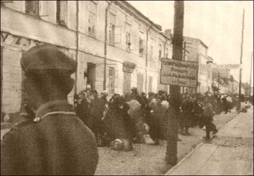

Pictures from our recent events and outreach
Prześladowania ludności żydowskiej rozpoczęły się wkrótce po dojściu Adolfa Hitlera do władzy w 1933 r. w Niemczech.[1]
Eksterminację wyznaczyły takie wydarzenia jak wprowadzenie ustaw norymberskich w 1935 r. i wielki pogrom nocy kryształowej w 1938 r.[2]
Przed wybuchem wojny systematycznie ograniczano prawa obywatelskie Żydów mieszkających w Rzeszy, dążąc jednocześnie do spowodowania jak największej ich emigracji do Palestyny. Okólnik H. W. Goringa z 24 stycznia 1939 r. skierowany do R. Heydricha przewidywał rozwiązanie kwestii żydowskiej poprzez emigrację i ewakuację.

1935 – wprowadzenie ustaw norymberskich [3]
1938 – Wielki pogrom nocy krysztaowej [4]
Jesienią 1939 r. zamierzano utworzyć rezerwat dla 5 milionów Żydów europejskich w Generalnym Gubernatorstwie, między Wisłą a Bugiem. Rozważano także przetransportowanie ich na Madagaskar po przeprowadzeniu rozmów z Francja na temat przekazania tej wyspy.
Do realizacji wspomnianych planów jednak nie doszło, chociaż na przełomie lat 1939/1940 miały miejsce próby deportacji Żydów z ziem polskich wcielonych do Rzeszy i Austrii na Lubelszczyznę.[5]
Pierwotne zamierzenia Hitlera skłaniającego do utworzenia buforowego państwa polskiego zwanego Keststaad, z którego wyłączona zostałaby Lubelszczyzna jako teren przewidziany na getto znalazł odbicie w instrukcji R. Heydricha z dnia 21 września 1939 r. zalecającej grupom operacyjnym tworzenie izolowanych dzielnic. Przez cały rok 1940 trwało usuwanie Żydów z przemysłu, handlu, szkół, sądów i urzędów, jednak do połowy tego roku nie przeprowadzono zorganizowanej akcji tworzenia gett na ziemiach polskich. Dopiero z chwilą rozpoczęcia przygotowań do agresji na Związek Radziecki, kiedy zaczął się kształtować zamiar całkowitej zagłady Żydów, przystąpiono do systematycznego tworzenia gett, mających ułatwić eksterminację. Toteż przez cały rok 1941 w GG dominowała tendencja do stałej redukcji liczby skupisk żydowskich i coraz ściślejszej ich izolacji.[6]
Wraz z napływem do ludności żydowskiej z innych terenów w samym dystrykcie lubelskim trwało przemieszczanie Żydów w związku z akcją tworzenia dla nich odrębnych dzielnic i wysyłką do obozów pracy przymusowej. Coraz częściej uwidacznia się tendencja do wysiedlania Żydów z centralnych ulic miast na peryferie i gromadzenie ich w wyznaczonych dzielnicach. Były to zwykle najuboższe ulice, na których jeszcze przed wybuchem wojny mieszkało najwięcej Żydów. Nie wydano jednak w tej sprawie żadnej ustawy czy też dekretu. Opierano się jedynie o rozporządzenie H. Franka o ograniczeniu swobodnego wyboru miejsca zamieszkania i pobytu w Generalnym Gubernatorstwie, wydanym 13 IX 1940 r.[7]
Tworzenie gett władze hitlerowskie starały się uzasadnić wieloma argumentami. Izolacja Żydów miała rzekomo wyeliminować ich szkodliwy wpływ na Polaków, zlikwidować pokątny handel i spekulację oraz zapobiec epidemiom tyfusu plamistego, którego Żydzi byli jakoby nosicielami. W rzeczywistości getta były instrumentem wyniszczania, gdyż skupiona w jednym miejscu ludność stanowiła łatwy obiekt represji. Stłoczenie wielkiej masy ludzi na małej zwykle przestrzeni sprzyjało epidemiom, a co za tym idzie wysokiej śmiertelności, potęgowanej przez głód i brak opieki lekarskiej. Izolacja Żydów ułatwiała również konfiskatę ich mienia oraz pozwalała ich wykorzystywać w maksymalnym stopniu do niewolniczej, upokarzającej pracy. Istnienie dzielnic zamkniętych stwarzało wreszcie dogodne warunki dla organizowania deportacji do obozów.[8]
Według danych okupanta w latach 1940 – 1941 na terenie dystryktu lubelskiego przebywało około 250 000 Żydów. Natomiast w powiecie Biała Podlaska liczba ludności pochodzenia żydowskiego przedstawiała się następująco w latach 1940 – 1942 (patrz tabela nr 1).
Ludność żydowska w powiecie Biała Podlaska w latach 1940 – 1942. Tabela nr 1
Według du Prela
rok 1940 -
rok 1941 -
Według akt JUS-
rok 1941 (marzec) -
rok 1941 (czerwiec) -
rok 1942 -
Źródło: Jerzy Doroszuk, Zagłada obywateli polskich pochodzenia żydowskiego, Zbrodnie hitlerowskie w regionie bialskopodlaskim 1939 – 1944 pod redakcją Mariana Kowalskiego, Lublin 1997, s. 131.
Różnice pomiędzy danymi liczbowymi tłumaczyć należy z jednej strony wyniszczaniem biologicznym ludności żydowskiej przez okupanta, z drugiej zaś masowym przesiedlaniem z innych terenów na Lubelszczyznę.
Z chwilą przejęcia władzy na terenie Generalnego Gubernatorstwa przez administrację cywilną tzn. 25 października 1939 r. rozpoczęła swoją działalność policja niemiecka i służba bezpieczeństwa. Podstawowym ich zadaniem było zorganizowanie na podległym terenie aresztów i więzień. Więzienia w dystrykcie lubelskim tak jak i w innych rejonach GG, były ogniwem systemu eksterminacji i powszechnego terroru. Wszystkie powstały przy posterunkach żandarmerii i policji i nie były miejscem czasowej izolacji czy odbywania kary, lecz w większości przypadków etapem poprzedzającym osadzenie w obozie koncentracyjnym, albo wręcz miejscem gdzie decydowano o życiu więźnia.[9]
Umotywowani przez określony rodzaj antysemityzmu, doprowadzający do wniosku, że Żydzi zasługują na śmierć, Niemcy od pierwszych lat wojny tworzyli sieć gett, w których izolowano ludność żydowską od reszty społeczeństwa. Jako pierwsze w dystrykcie lubelskim powstało getto w Puławach w grudniu 1939 r. Następnie w ostatnich miesiącach 1940 r. utworzono getto w powiecie Biała Podlaska we wsi Wisznice. Zamieszkiwała w nim początkowo okoliczna biedota, jako, że zamożniejsi Żydzi przeprowadzali się do większych miast. Pod koniec grudnia 1940 r. w związku z przywiezieniem transportu wysiedleńców z Mławy rozwiązano wisznickie getto zaś Żydzi powrócili do swoich domów.[10]
W marcu 1941 r. utworzono kolejne getta na terytorium obecnego województwa bialskopodlaskiego mianowicie w mieście Biała Podlaska, Łomazach, Międzyrzecu Podlaskim, Parczewie, Radzyniu Podlaskim, Sławatyczach i Wisznicach. W obrębie tych gett znalazły się dzielnice tradycyjnie, od wieków zamieszkałe przez ludność żydowską. Inteligencję żydowską a wśród niej lekarzy, prawników, bogatych kupców i przedsiębiorców wysiedlono z zajmowanych przez nich domów i umieszczono w gettach. Ponadto do tych gett skierowano ludność żydowską w liczbie ponad 10.000 z różnych miast Polski m.in. z Kalisza, Krakowa, Łodzi, Łowicza, Mławy, Nasielska, Serocka, Sierpca, Suwałk i Zgierza.[11]
Getto w Białej Podlaskiej zlokalizowane zostało w śródmieściu, na ulicach Grabanowskiej (obecnej Moniuszki), Janowskiej, Prostej i Sadowej.

Getto w Białej Podlaskiej 1942 r.(ul. Stanisława Moniuszki).[12]
Zebrani tam Żydzi pracowali m.in. przy odgruzowywaniu rozbitych budynków twierdzy w Brześciu, dokąd dowożono ich samochodami. Zmuszano ich także do niewolniczej wręcz pracy przy regulacji rzeki Krzny, przy budowie lotniska w Małaszewiczach, oprócz tego pracowali przy budowie nowych ulic w mieście i wykonywali tzw. prace porządkowe w okolicy miasta Biała Podlaska i w samym mieście.[13]
W latach 1939 – 1942 kontynuowały swoją, znacznie ograniczoną działalność, zarządy wyznaniowych gmin żydowskich. Przemianowano je na tzw. judenrat – „rady żydowskie”, przy których działała żydowska policja porządkowa. Były one ściśle kontrolowane przez niemiecką policję i żandarmerię. Każdy Żyd i Żydówka bez względu na wiek, pod groźbą surowej kary, z karą pozbawienia życia włącznie, zobowiązani byli do noszenia początkowo żółtej gwiazdy Dawida a potem białej opaski z wyszytą na niej gwiazdą Dawida. Ludność żydowska tak ”oznaczona”, mogła przebywać wyłącznie w getcie lub w wyznaczonym rejonie ulic. Wstęp do getta Polakom był surowo wzbroniony, jak również wszelkie kontakty z mieszkańcami getta.[14]
Widok na getto u zbiegu ulic Grabowskiej i Wąskiej.[15]
Co pewien czas Niemcy przeprowadzali selekcję wśród mieszkańców getta. Słabych fizycznie wywożono w nieznanym kierunku, skąd już jak mówią świadkowie nie wracali bądź rozstrzeliwano ich na miejscowym cmentarzu żydowskim.[16]
Na skutek fatalnych warunków sanitarnych, braku żywności i znacznego zagęszczenia osób w poszczególnych mieszkaniach żyjących po kilkunastu w jednym pomieszczeniu, w gettach panowały epidemie chorób zakaźnych takich jak dur brzuszny i tyfus plamisty. Epidemie tych chorób szczególnie nasilone w okresie wiosny 1942 r., dziesiątkowały ludność żydowską zarówno w gettach jak i w obozach prac przymusowych. Chorych początkowo wywożono do szpitala żydowskiego przy obecnej ulicy Janowskiej, a później z braku miejsc rozstrzeliwano ich na miejscu bądź wysyłano do obozów zagłady m.in. na Majdanek. Do rzadkości nie należały bezpośrednie zbrodnie dokonywane na mieszkańcach gett przez policję i żandarmerię.[17]
Żyd z bialskiego getta (1942 -
Po ataku na ZSRR 22 czerwca 1941 r. za oddziałami Wehrmachtu podążały cztery specjalne grupy operacyjne SS zwane Einsatzgruppen liczące łącznie 3 000 esesmanów, których podstawowym zadaniem było mordowanie Żydów. Do końca 1941 r. zlikwidowały one 482 000 osób pochodzenia żydowskiego na terenach radzieckich, w Jugosławii oraz w Polsce w Chełmnie nad Nerem. 20 stycznia 1942 r. na konferencji w Wannsee na przedmieściach Berlina zapadła decyzja rozpoczęcia operacji, której nadano miano ostatecznego rozwiązania kwestii żydowskiej – Endlosung der Judenfrage.[19]
Główny nazistowski plan eksterminacji Żydów w Europie, (1942 r.)[20]
Rozpoczęła się wówczas pierwsza faza masowej eksterminacji Żydów z Białej Podlaskiej i okolic, a miało to miejsce w dniu 10 czerwca 1942 r.
Getto żydowskie w Białej Podl., (rok 1942-
Około 3000 grupę Żydów deportowano wówczas do obozu masowej zagłady w Sobiborze koło Włodawy, funkcjonującym już od kwietnia tego roku. Część ludności żydowskiej z południa powiatu, z miejscowości Podedwórze, Rossosz, Sławatycze, w dniu 13 czerwca wywieziono do Łomaz. Prawdopodobnie Niemcy liczyli na rychłą deportację Żydów z Łomaz do Sobiboru. Nie zrealizowano jednak tego postanowienia, w związku z transportem wojska i sprzętu wojennego na front wschodni oraz przebudową linii kolejowych do Sobiboru. W czerwcu tego roku wstrzymano ruch pasażerski i każdy inny na tej linii w związku z czym na kilka tygodni ustało wywożenie Żydów z Lubelszczyzny do miejsc eksterminacji. W powiecie Biała Podlaska przerwa ta trwała do jesieni.[22]
Do masowej eksterminacji ludności żydowskiej oraz likwidacji gett w większych osadach powiatu bialskopodlaskiego przystąpili Niemcy już latem 1942 r. W sierpniu tego roku okupanci zlikwidowali getta w Janowie Podlaskim, Kodniu, Konstantynowie, Łomazach, Piszczacu, Rossoszy, Terespolu, Wisznicach. W gettach tych plus jeszcze getto bialskopodlaskie oprócz miejscowej ludności znajdowała się także ludność żydowska wysiedlona z terenów Pomorza, Suwalszczyzny, Wielkopolski i innych okolic.[23]

Likwidacja getta w Białej Podlaskiej, 1942 r., ul. Stanislawa Moniuszki.[24]
Likwidacja getta w Białej Podlaskiej, 1942 r., Plac Wolności (Rynek).[25]
Najwcześniej bo już w marcu zlikwidowano getto w Podedwórzu, wywożąc 378 jego mieszkańców do Białej Podlaskiej. 250 Żydów w kwietniu 1942 r. trafiło do getta w Łomazach.[26] Następnym było getto w Sławatyczach liczące w czerwcu 1942 r. 1,325 mieszkańców. 480 jego mieszkańców 13 czerwca wywieziono do Łomaz, pozostałe 1,154 osoby pod koniec września trafiły do Międzyrzeca Podlaskiego.[27] W trakcie likwidacji getta w Janowie Podlaskim, zgromadzoną tam ludność żydowską liczącą w sierpniu 1942 r. 1,883 osoby, wywieziono najpierw do Białej Podlaskiej a następnie 23-
Przy likwidacji getta w Łomazach Niemcy zamordowali około 2000 Żydów w tym mężczyzn, kobiety i dzieci z samych Łomaz a także i przybyłych ze Sławatycz (480 osób), Rossosza (152 osoby), Podedwórza (250 osób) i z obozu w Szenejkach (dokładnej liczby nie ustalono). Tylko nielicznym dzięki pomocy miejscowej ludności udało się ocalić życie.[31]Do likwidacji łomazkiego getta Niemcy przystąpili już o świcie 18 sierpnia 1942 r. W tym celu do pobliskiego lasu zwanego „Chały”, względnie „Hały”, jak podają inne źródła, przywieziono w asyście żandarmów grupę około 40 młodych Żydów. Otrzymali oni rozkaz wykopania kilku dołów. Tymczasem w Łomazach otoczona została dzielnica żydowska, usytuowana na ulicy Małobrzeskiej. Jej mieszkańców żandarmi wypędzali wprost na ulicę, ustawiając w kolumnę a następnie rewidując. W trakcie rewizji odebrano Żydom wszelkie przedmioty przedstawiające jakąkolwiek wartość, a więc biżuterię, zegarki a nawet złote zęby. Nie posiadających już nic prócz ubrania, popędzili następnie przez ulicę Budzyń na plac nieopodal szkoły podstawowej zwany przez mieszkańców Łomaz polem Teofila Szostakiewicza. Na miejsce wezwano sołtysa, któremu kazano przynieść liny a następnie opasać nimi tylko mężczyzn żydowskich, kobiety, starcy i dzieci dowiezieni do lasu zostali samochodami. Zaraz potem eskorta żandarmerii pognała drogą w stronę lasu kolumny mężczyzn, w trakcie marszu dotkliwie bijąc nahajkami i kolbami karabinów. Nieopodal cmentarza żydowskiego, kilku więźniów żydowskich usiłowało zbiec, niestety natychmiast ich rozstrzelano. Celem ”podróży” była leśna polana zwana „Średnią Ochuczką”, na której zebrani Żydzi zmuszeni zostali do rozebrania się. Głąbiej w lesie przygotowane już były doły, wykopane przez grupę wspomnianych 40 Żydów. Na brzegu każdego dołu znajdowała się kładka wprowadzająca. Na niej to umieszczano grupę kilku Żydów a następnie strzałem w tył głowy uśmiercano. Dzieci żydowskie mordowano uderzeniem głowy o drzewo, aby zaoszczędzić amunicję. Huk wystrzałów oraz jęki zabijanych ludzi słychać było przez cały dzień. Ciała ofiar zapełniły wkrótce dwa całe doły jeden pozostał pusty. Po wykonaniu egzekucji spalono zgromadzoną odzież. Ogółem tego pamiętnego dnia zginęło jak już wspomniałam 2000 osób pochodzenia żydowskiego. Świadkowie twierdzą, że mordu dokonała żandarmeria z Wisznic, jeden z żandarmów o nazwisku Johann Geryng został wśród morderców rozpoznany. Dopiero po wyzwoleniu dokonano częściowej ekshumacji zwłok pomordowanych, które następnie przewieziono na cmentarz w Łomazach.[32] Szerzej m.in. o tych wydarzeniach piszę w kolejnym podrozdziale.
Żydzi na polu Teofila Szostakiewicza w Łomazach.[33]
Piszczackie getto zlikwidowane zostało podobnie jak getta w Janowie Podlaskim, Kodniu i Konstantynowie, latem 1942 r. Zgromadzoną tam ludność żydowską liczącą w sierpniu 965 mieszkańców wywieziono we wrześniu 1942 r. do Międzyrzeca Podlaskiego.[34] Getto w Rossoszu w trakcie likwidacji w sierpniu 1942 r. liczyło 433 mieszkańców. Część tej sumy Niemcy rozstrzelali w Łomazach a część pod koniec września, wywieziona została jak i poprzedni do Międzyrzeca Podlaskiego.[35] Terespolskie getto liczące w sierpniu 284 Żydów w całości przetransportowane zostało z końcem września także do Międzyrzeca Podlaskiego.[36] W Wisznicach w trakcie likwidacji getta liczącego wówczas 1,025 mieszkańców, 17 września 1942 r. rozstrzelano 120 Żydów, natomiast pozostałych z końcem września podobnie jak i w poprzednich przypadkach wywieziono do Międzyrzeca Podlaskiego.[37]
We wrześniu 1942 r. Niemcy przystąpili do likwidacji getta w Białej Podlaskiej. Zamordowano wówczas od 3500 do 4000 Żydów.[38] Na terenie samego getta w mieście Biała Podlaska rozstrzelano około 500 Żydów, na cmentarzu żydowskim – kirkucie natomiast około 1000 Żydów. Tego dnia miała też miejsce egzekucja mieszkańców getta na placu zwanym „Popówka”, w trakcie której rozstrzelano jeszcze około 2000 Żydów.[39] Pozostałych przy życiu Żydów łącznie z ludnością żydowską z Janowa Podlaskiego i Konstantynowa w liczbie około 6000 osób skierowano pieszo do Międzyrzeca Podlaskiego. Tam w obrębie getta zorganizowano punk zborny z umieszczonymi uprzednio Żydami z Radzynia Podlaskiego i Parczewa.[40] Transporty takie miały miejsce w dniach 26 września i 6 października 1942 r. Z Międzyrzeca Podlaskiego ludność żydowska kierowana była następnie transportami kolejowymi do obozu masowej zagłady w Treblince. W lipcu 1943 r. odjechał z Międzyrzeca Podlaskiego ostatni transport Żydów do Treblinki, a w okresie od września 1942 r. do lipca 1943 r. w Międzyrzecu i okolicy Niemcy zamordowali około tysiąca podlaskich Żydów.[41]
Do Treblinki z obecnego terytorium województwa bialskopodlaskiego w drugiej połowie 1942 r. wywieziono także i inne transporty Żydów. Tak np. z Radzynia Podlaskiego w dniach 13-
W okresie jesiennych wysiedleń – wrzesień i listopad 1942 r. oraz nasilonej eksterminacji ludności żydowskiej na Podlasiu miały miejsce dość liczne i często udane ucieczki Żydów z gett i wspomnianego punktu zbornego w Międzyrzecu Podlaskim. Ratująca się ucieczką ludność żydowska rozpraszała się po okolicznych lasach, budując w nich prowizoryczne szałasy i bunkry. Miało to miejsce m.in. w lasach chotyłowskich, międzyrzeckich, parczewskich i radzyńsko – turowskich.[44] Część uciekinierów kryła się w chłopskich zabudowaniach, szukając pomocy i wsparcia wśród mieszkańców wsi i osad. Większość tak przetrwała zimę na przełomie 1942/1943 r. lecz na wiosnę nękana łapankami i obławami znowu musiała ponieść dość liczne ofiary. Można tu wspomnieć, że wraz z ludnością żydowską ginęła także i ludność polska narażająca życie i ukrywająca Żydów w swoich domostwach. Młodzież żydowska w pokaźnej liczbie, różnymi drogami i sposobami dostawała się do oddziałów partyzanckich tak polskich jak i radzieckich. Tam walcząc z wrogiem przetrwała niejednokrotnie trudne i ciężkie lata niemieckiej okupacji do dnia wyzwolenia Podlasia.[45]
W celu skoncentrowania Żydów w jednym miejscu i aby zapobiec ucieczkom z gett 28 października 1942 r. Niemcy wydali rozporządzenie o utworzeniu żydowskich dzielnic mieszkaniowych w dystrykcie lubelskim i warszawskim. Tak w sześciu powiatach lubelskiego dystryktu miało powstać osiem gett, do których zamierzano zwerbować ukrywającą się resztę Żydów, stwarzając przy tym pozory, że ich życiu nie zagraża żadne niebezpieczeństwo. Niestety getta te podzieliły los poprzednich – zostały bardzo szybko zlikwidowane, a w rezultacie z liczby 250 000 Żydów, przebywających w dystrykcie lubelskim jeszcze w kwietniu 1941 r., w końcu 1942 r. pozostało zaledwie 20 000.[46]
[1]Eyewitness History of the World, The Rise of Fascism, A Dorling Kindersley Product, Dorling Kindersley Multimedia, New York, NY, USA. (CD ROM, film).
[2] Bożena Bankowicz, Marek Bankowicz, Antoni Dudek, Leksykon historyczny XX wieku, Kraków 1996, wydawnictwo GEO, s. 218.
[3]Eyewitness History of the World, Jews in Nazi Germany…, op. cit.
[4] Ibid.
[5] Janina Kiełboń, Migracje ludności w dystrykcie lubelskim w latach 1939 – 1944, Lublin 1995, s. 15.
[6] Ibid., s. 158, Eugeniusz Wiński, Eksterminacja mieszkańców powiatu Biała Podlaska w latach 1939-
[7] J. Kiełboń, Migracje…, op. cit. s. 157.
[8] ibid., s. 158.
[9] Edward Dziadosz, Józef Marszałek, Więzienia i obozy w dystrykcie lubelskim w latach 1939 – 1944, Zeszyty Majdanka, t. III, Lublin 1969, s. 55-
[10] J Doroszuk, Zagłada obywateli…, op. cit., s. 132.
[11] Jerzy Sroka, Ślad, Podlaskie Towarzystwo Społeczno – Kulturalne, Klub Miłośników Regionu O/W Stowarzyszenie PAX, pod redakcją Henryka Kusia, Biała Podlaska 1988.
[12] Archiwum Miejskie w Tübingen (Niemcy), kserokopia w posiadaniu Archiwum Regionalnego Wojewódzkiej Biblioteki Publicznej w Białej Podlaskiej.
[13] Stanisław Jadczak, Biała Podlaska dzieje miasta i jego zabytki, Lublin 1993, s. 59, J. Doroszuk, Zagłada…, op. cit.
[14] J. Sroka, Ślad, op. cit.
[15] Zbrodnie hitlerowskie w regionie bialskopodlaskim w latach 1939-
[16] J. Doroszuk, Zagłada obywateli…, op. cit.
[17] ibid., J, Sroka, Ślad, op. cit.
[18] Archiwum Miejskie w Tübingen (Niemcy), kserokopia w posiadaniu Archiwum Regionalnego Wojewódzkiej Biblioteki Publicznej w Białej Podlaskiej.
[19] B. Bankowicz, M. Bankowicz, A. Dudek, Leksykon…, op. cit., J, Kiełboń, Migracje…, op. cit., s. 15
[20]Daniel Jonah Goldhagen, Hitler’s Willing Executioners, Ordinary Germans and Holocaust, First Vinatage Books Edition, 1997, Mark Stein Studios, 1995, s. 159.
[21] Archiwum Miejskie w Tübingen (Niemcy), kserokopia w posiadaniu Archiwum Regionalnego Wojewódzkiej Biblioteki Publicznej w Białej Podlaskiej.
[22] J. Doroszuk, Zagłada obywateli…, op. cit.
[23] ibid. s. 134, J. Sroka, Ślad, op. cit.
[24] Archiwum Miejskie w Tübingen (Niemcy, kserokopia w posiadaniu Archiwum Regionalnego Wojewódzkiej Biblioteki Publicznej w Białej Podlaskiej.
[25] Archiwum Miejskie w Tübingen (Niemcy), kserokopia w posiadaniu Archiwum Regionalnego Wojewódzkiej Biblioteki Publicznej w Białej Podlaskiej.
[26] J.Doroszuk, Zagłada…, op. cit., s. 135.
[27] Ibid., s. 136.
[28] Ibid., s. 135.
[29] Ibid.
[30] Ibid.,
[31] Ibid., Kazimierz Leszczyński, Eksterminacja ludności na ziemiach polskich w latach 1939-
[32] OKL/117/70, zeznania: J. Bańkowski, J. Głowacki, F. Hryniewicz, F. Olichwirowicz, J. Sadownik, P. Sadownik, A. Szatałowicz, L. Szatałowicz, F. Tyszewski.
[33] D. J. Goldhagen, Hitler’s willing…, op. cit., s. 225.
[34] J. Doroszuk, Zagłada…, op. cit.
[35] Ibid., s. 136
[36] Ibid.
[37] Ibid.
[38] Leszek Siemion, Egzekucje na Lubelszczyźnie, Zeszyty Majdanka, t. III, Lublin 1969, s. 168
[39] J. Doroszuk, Zagłada…, op. cit., s. 137, L. Siemion, Egzekucje…, op. cit.
[40] J. Sroka, Ślad…, op. cit.
[41] Ibid.,
[42] J. Kiełboń, Migracje…, op. cit., s. 155.
[43] Ibid.
[44] J. Doroszuk, Zagłada obywateli…, op. cit., J. Sroka, Ślad…, op. cit.
[45] Ibid.
[46] J. Doroszuk, Zagłada obywateli… op. cit.
Getta